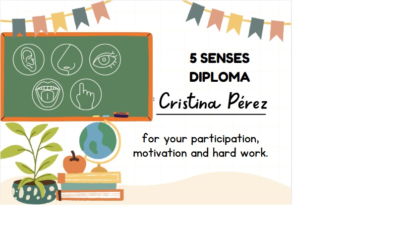

TASK 1
Relato a continuación los instrumentos de evaluación que se van a utilizar para algunas de las tareas de mi SdA:
Tarea 1:
Los alumnos recorrerán las “Sensory islands” y deberán reconocer los alimentos por el sentido del gusto, tacto, olfato y vista.
Instrumento de evaluación:
1- Diploma y tarjeta de sellos
El alumnado va a ir acumulando sellos en su tarjeta cada vez que supere la actividad a realizar en cada “Sensory island”. Al finalizar, si ha conseguido todos los sellos obtendrá un diploma.
Dicho instrumento de evaluación, la tarjeta de sellos, me permite evaluar en cada momento si un alumno ha superado la estación anterior hasta obtener el diploma.
Obtendré los datos una vez que finalicen cada rincón, a su vez dichos datos me servirán para hacer un seguimiento de la tarea, así como de la asimilación de contenidos de mi alumnado.
El diploma que se entregará, se puede visualizar en el siguiente enlace: diploma
